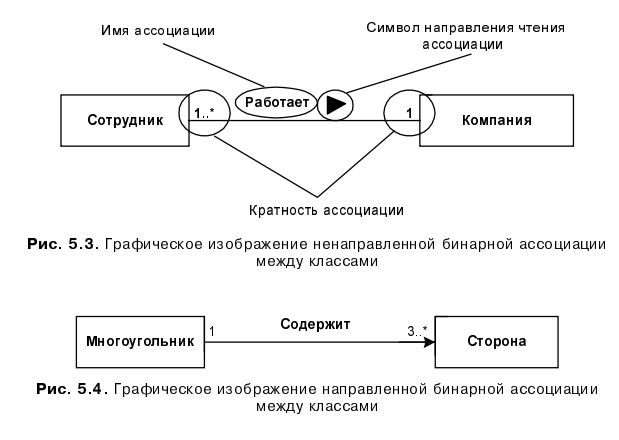
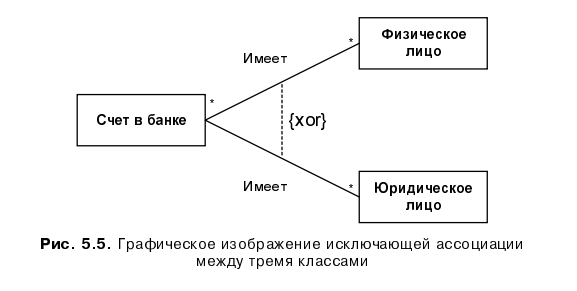
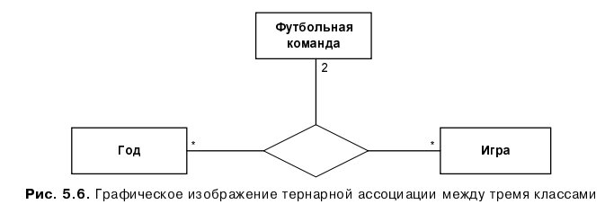
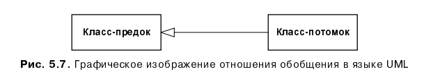
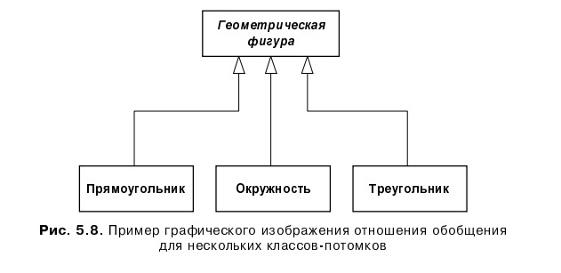
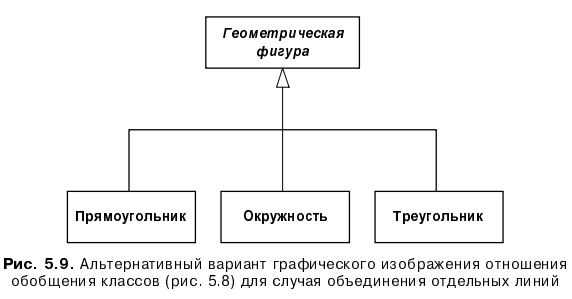
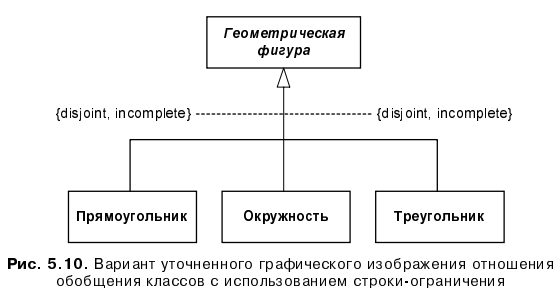
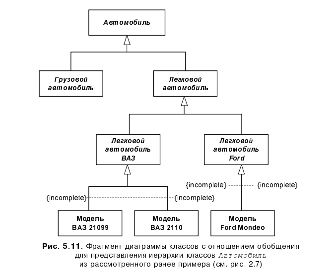

Класс (class) в языке UML является абстрактным описанием или представ- лением свойств множества объектов, которые обладают одинаковой структу- рой, поведением и отношениями с объектами из других классов. Графиче- ски класс в нотации языка UML изображается в виде прямоугольника, который дополнительно может быть разделен горизонтальными линиями на разделы или секции (рис. 5.1). В этих секциях могут указываться имя клас- са, атрибуты (переменные) и операции (методы). Обязательным элементом обозначения класса является его имя. На началь- ных этапах разработки диаграммы отдельные классы могут обозначаться простым прямоугольником с указанием только имени соответствующего класса (рис. 5.1, а). По мере проработки отдельных компонентов диаграммы описания классов дополняются атрибутами (рис. 5.1, б) и операциями (рис. 5.1, в). Предполагается, что окончательный вариант диаграммы содер- жит наиболее полное описание классов, которые состоят из трех разделов или секций.
Даже если секция атрибутов и операций является пустой, в обозначении класса она выделяется горизонтальной линией, чтобы сразу отличить класс от других элементов языка UML. Примеры графического изображения конкретных классов приведены на рис. 5.2. В первом случае для класса Прямоугольник (рис. 5.2, а) указаны только его атрибуты точки на коор- динатной плоскости, которые определяют его расположение. Для класса Окно (рис. 5.2, б) указаны только его операции, при этом секция его атрибу- тов оставлена пустой.
Иногда в обозначениях классов используется дополнительный четвертый раздел, в котором приводится информация справочного характера (напри- мер, сведения о разработчике, языке реализации и пр.) или явно указывают- ся исключительные ситуации. Для класса Счет (рис. 5.2, в) дополнительно изображена четвертая секция, в которой указано исключение - неверно введенный ПИН-код.
Имя класса должно быть уникальным в пределах пакета, который может со- держать несколько диаграмм классов или, возможно, только одну диаграм- му. Имя указывается в самой верхней секции прямоугольника, поэтому эта секция часто называется секцией имени класса. В дополнение к общему правилу именования элементов языка UML, имя класса записывается по центру секции имени полужирным шрифтом и должно начинаться с заглав- ной буквы. Рекомендуется в качестве имен классов использовать существи- тельные, записанные по практическим соображениям без пробелов. Необхо- димо помнить, что именно имена классов образуют словарь предметной области при ООАП.
Хотя согласно требованиям спецификации языка UML имя класса должно запи- сываться полужирным шрифтом, это условие соблюдается разработчиками крайне редко. Возможно, причиной служит тот факт, что CAЅЕ-средства не поддерживают соответствующую нотацию. В дальнейшем толщине шрифта при записи имени класса не будет придаваться принципиального значения, поскольку на фоне других ошибок, допускаемых разработчиками при графическом изобра- жении элементов языка UML, эта представляется легким недоразумением. В секции имени класса могут также находиться стереотипы или ссылки на стандартные шаблоны, от которых образован данный класс и, соответствен- но, от которых он наследует атрибуты и операции. В этой секции может также приводиться информация о разработчике данного класса и статус со- стояния разработки, а также могут записываться и другие общие свойства этого класса, имеющие отношение к другим классам диаграммы или стан- дартным элементам языка UML. Примерами имен классов могут быть такие существительные, как Сотруд- ник, Компания, Руководитель, Клиент, Продавец, Менеджер, Офис и мно- гие другие, имеющие непосредственное отношение к моделируемой пред- метной области и функциональному назначению проектируемой системы. Класс может не иметь экземпляров или объектов. В этом случае он называет- ся абстрактным классом, а для обозначения его имени используется наклон- ный шрифт (курсив). В языке UML принято общее соглашение о том, что любой текст, относящийся к абстрактному элементу, записывается курсивом.
Курсив при записи имени класса, в отличие от толщины шрифта, имеет прин- ципиальное значение, поскольку является семантическим аспектом описания абстрактных элементов языка UML. Именно по этой причине разработчикам следует внимательно записывать имена классов.
В некоторых случаях необходимо явно указать, к какому пакету относится тот или иной класс. Для этой цели используется специальный символ раз- делитель двойное двоеточие (::). Синтаксис строки имени класса в этом случае будет следующий: «Имя пакета>: . Другими словами, перед именем класса должно быть явно указано имя пакета, к которому его следует отнести. Например, если определен пакет с именем Банк, то класс Счет в этом банке может быть записан в виде: Банк:: Счет.
Атрибут (attribute) класса служит для представления отдельного свойства или признака, который является общим для всех объектов данного класса. Атрибуты класса записываются во второй сверху секции прямоугольника класса, поэтому эту секцию часто называют секцией атрибутов. Глава 5. Диаграмма классов (class diagram) 137 В языке UML принята определенная стандартизация записи атрибутов клас- са, которая подчиняется некоторым синтаксическим правилам. Каждому атрибуту класса соответствует отдельная строка текста, которая состоит из квантора видимости, имени, его кратности, типа значений атрибута и, воз- можно, его исходного значения. Общий формат записи отдельного атрибута класса следующий:
|кратность: - (строка-свойство) Квантор видимости (visibility) может принимать одно из 4-х возможных зна- чений и, соответственно, отображается при помощи специальных символов.Квантор видимости может быть опущен. В этом случае его отсутствие про- сто означает, что видимость атрибута не указывается. Эта ситуация отлича- ется от принятых по умолчанию соглашений в традиционных языках про- граммирования, когда отсутствие квантора видимости трактуется как public или private. Однако вместо условных графических обозначений можно запи- сывать соответствующее ключевое слово: public, protected, private или package.
По справедливому замечанию Мартина Фаулера - ничто не определяется так просто и не вызывает столько противоречивых толкований в языке UML, как ин- терпретация видимости на диаграммах. Хотя язык UML по определению инва- риантен относительно реализации своих конструкций в конкретных языках программирования, попытка интерпретировать кванторы видимости безотноси тельно к языкам программирования может привести к серьезным трудностям. Именно по этой причине значения кванторов видимости атрибутов и операций рекомендуется записывать в модели только после того, как будет принято ре шение о языке ее программной реализации. С другой стороны, разработчик всегда может уточнить семантику используемых кванторов видимости в форме примечания с пояснительным текстом на естественном языке.
Имя атрибута представляет собой строку текста, которая используется в качестве идентификатора соответствующего атрибута и поэтому должна быть уникальной в пределах данного класса. Имя атрибута является единст- венным обязательным элементом синтаксического обозначения атрибута, должно начинаться со срочной (малой) буквы и, как правило, не должно содержать пробелов.
Кратность атрибута характеризует общее количество конкретных атрибутов данного типа, входящих в состав отдельного класса. В общем случае крат- ность записывается в форме строки из цифр в квадратных скобках после име- ни соответствующего атрибута, при этом цифры разделяются двоеточием:
|нижняя граница верхняя граница],где нижняя граница и верхняя граница являются положительными целыми числами, каждая пара которых служит для обозначения отдельного замкну- того интервала целых чисел. В качестве верхней границы может использо- ваться специальный символ (звездочка), который означает произвольное положительное целое число. Другими словами, этот символ означает неог- раниченное сверху значение кратности соответствующего атрибута.
нижние Интервалов кратности для отдельного атрибута может быть несколько. В этом случае их совместное использование соответствует теоретико- множественному объединению соответствующих интервалов. Значения крат- ности из интервала следуют в монотонно возрастающем порядке без про- пуска отдельных чисел, лежащих между нижней и верхней границами. При этом придерживаются следующего правила: соответствующие и верхние границы интервалов включаются в значение кратности.
Если в качестве кратности указывается единственное число, то кратность атрибута принимается равной данному числу. Если же указывается единст- венный знак "*", то это означает, что кратность атрибута может быть произ- вольным положительным целым числом или нулем.
В качестве примера рассмотрим следующие варианты задания кратности атрибутов.
Если кратность атрибута не указана, то по умолчанию принимается ее зна- чение равное 11..11, т. е. в точности 1.
Тип атрибута представляет собой выражение, семантика которого опреде- ляется некоторым типом данных, определенным в пакете Типы данных языка UML или разработчиком. В нотации UML тип атрибута иногда опре- деляется в зависимости от языка программирования, который предполагает- ся использовать для реализации данной модели. В простейшем случае тип атрибута указывается строкой текста, имеющей осмысленное значение в пределах пакета или модели, к которым относится рассматриваемый класс. Типу атрибута должно предшествовать двоеточие.Можно привести следующие примеры задания имен и типов атрибутов классов:
Поскольку во многих языках программирования существует тип данных String, использование соответствующего англоязычного термина не вызывает недора- зумения у большинства программистов. Поскольку в языке UML все термины даются в англоязычном представлении, использование в качестве типа атрибу- та Строка в данной ситуации не исключается и определяется только соображе- ниями удобства.
Исходное значение служит для задания некоторого начального значения для соответствующего атрибута в момент создания отдельного экземпляра клас- са. Здесь необходимо придерживаться правила принадлежности значения типу конкретного атрибута. Если исходное значение не указано, то значение соответствующего атрибута не определено на момент создания нового эк- земпляра класса. С другой стороны, конструктор соответствующего объекта может переопределять исходное значение в процессе выполнения програм- мы, если в этом возникает необходимость.
В качестве примеров исходных значений атрибутов можно привести допол- ненные варианты задания атрибутов.
При задании атрибутов могут быть использованы две дополнительные син- таксические конструкции - это подчеркивание строки атрибута и поясни- тельный текст в фигурных скобках.
Подчеркивание строки атрибута означает, что соответствующий атрибут является общим для всех объектов данного класса, т. е. его значение у всех соз- даваемых объектов одинаковое (аналог ключевого слова static в некоторых языках программирования). Например, если некоторый атрибут задан в виде форма : Прямоугольник, то это будет означать, что все объекты данного класса имеют форму прямоугольника.
Строка-свойство служит для указания дополнительных свойств атрибута, которые могут характеризовать особенности изменения значений атрибута в ходе выполнения соответствующей программы. Фигурные скобки как раз и обозначают фиксированное значение соответствующего атрибута для класса в целом, которое должны принимать все вновь создаваемые экземпляры класса без исключения. Это значение принимается за исходное значение атрибута, которое не может быть переопределено в последующем. Отсутствие строки-свойства по умолчанию трактуется так, что значение соответствующего атрибута может быть изменено в программе.
Например, строка-свойство, в записи атрибута, заработнаяПлата : Currency = $500{frozen} может служить для обозначения фиксированной заработной платы для каждого объекта класса Сотрудник в некоторой организации, которое не подлежит изменению с течением времени. Именно на этот факт указывает строка-свойство {frozen} (замороженный), что, вообще говоря, не придаст оптимизма в работе этих сотрудников.
С другой стороны, запись данного атрибута без строки-свойства, в виде заработнаяПлата : Currency = $500, означает уже нечто иное, а именно: при создании нового экземпляра класса Сотрудник (пример - прием на работу нового сотрудника) для него по умолчанию устанавливается заработная плата в $500. Однако для отдельных сотрудников могут быть сделаны исключения как в большую, так и в меньшую сторону, и это значение со временем может быть изменено.
Операция (оperation) - это некоторый сервис, который предоставляет каждый экземпляр или объект класса по требованию своих клиентов (других объектов, в том числе и экземпляров данного класса). Операции класса записываются в третьей сверху секции прямоугольника класса, поэтому эту секцию часто называют секцией операций. Совокупность операций характеризует функциональный аспект поведения всех объектов данного класса.
Запись операций класса в языке UML также стандартизована и подчиняется определенным синтаксическим правилам. При этом каждой операции класса соответствует отдельная строка, которая состоит из квантора видимости операции, имени, выражения типа возвращаемого значения, и, возможно, строка-свойство данной операции. Общий формат записи отдельной операции класса следующий:
[квантор видимости] [имя операции] (список параметров): [выражение типа возвращаемого значения] (строка-свойство) Квантор видимости, как и в случае атрибутов класса, может принимать одно из четырех возможных значений и, соответственно, отображается при
помощи специального символа либо ключевого слова. Символ "+" обознача- ет операцию с областью видимости типа общедоступный (public). Символ "#" обозначает операцию с областью видимости типа защищенный (protected). Символ "-" используется для обозначения операции с областью видимости типа закрытый (private). И, наконец, символ используется для обозначения операции с областью видимости типа пакетный (package). Квантор видимости для операции может быть опущен. В этом случае его отсутствие просто означает, что видимость операции не указывается. Вместо условных графических обозначений также можно записывать соответствую- щее ключевое слово: public, protected, private или package.
Применительно к конкретным языкам программирования могут быть определены дополнительные кванторы видимости, как, например, видимость friend (дру- жественный) в языке C++, которая никак не специфицирована в языке UML. В этом случае подобные дополнения являются расширением базовой нотации и требуют от разработчика соответствующих пояснений в форме текста на ес- тественном языке или в виде строки свойства.
Имя операции представляет собой строку текста, которая используется в ка- честве идентификатора соответствующей операции и поэтому должна быть уникальной в пределах данного класса. Имя операции является единствен- ным обязательным элементом синтаксического обозначения операции, должно начинаться со срочной (малой) буквы и, как правило, не должно содержать пробелов.
Список параметров является перечнем разделенных запятой формальных параметров, каждый из которых, в свою очередь, может быть представлен в следующем виде:
[вид параметра] [имя параметра] : [выражение типа] = [значение параметра по умолчанию]
Здесь вид параметра - есть одно из ключевых слов in, out ИЛИ inout co значением in по умолчанию, в случае если он не указывается. Имя пара- метра есть идентификатор соответствующего формального параметра, при записи которого следуют правилам задания имен атрибутов. Выражение ти- па является спецификацией типа данных для возвращаемого значения соот- ветствующего формального параметра. Наконец, значение по умолчанию в общем случае представляет собой некоторое конкретное значение для этого формального параметра.
Выражение типа возвращаемого значения также указывает на тип данных зна- чения, которое возвращается объектом после выполнения соответствующей операции. Двоеточие и выражение типа возвращаемого значения могут быть опущены, если операция не возвращает никакого значения. Для указания нескольких возвращаемых значений данный элемент спецификации опера- ции может быть записан в виде списка отдельных выражений.
Операция с областью действия на весь класс показывается подчеркиванием имени и строки выражения типа. В этом случае под областью действия опе- рации понимаются все объекты этого класса. В этом случае вся строка записи операции подчеркивается.
Строка-свойство служит для указания значений свойств, которые могут быть применены к данной операции. Строка-свойство не является обязательной, она может отсутствовать, если никакие свойства не специфицированы.
Например, если операция не должна изменять состояние системы и, соот- ветственно, не имеет никакого побочного эффекта, то в ее записи следует указать строку-свойство {query} (запрос). В противном случае операция может изменять состояние системы, хотя нет никаких гарантий, что она бу- дет это делать.
Для повышения производительности системы одни операции могут выпол- няться параллельно, а другие только последовательно. В этом случае для указания параллельности выполнения операции также можно использовать строку-свойство вида (concurrency имя), где имя может принимать одно из следующих значений: sequential (последовательная), concurrent (па- раллельная), guarded (охраняемая). При этом придерживаются следующей семантики для данных значений:
С целью сокращения обозначений допускается использование одного имени в качестве строки свойства для указания соответствующего значения парал- лельности. Отсутствие данной строки свойства означает, что семантика парал- лельности для операции не определена. Поэтому следует предположить худ- ший с точки зрения производительности случай, когда данная операция требует последовательного выполнения.
Появление сигнатуры операции у классов на самом верхнем уровне абстрак- ции объявляет данную операцию на весь класс, при этом данная операция наследуется всеми потомками данного класса. Если в некотором классе опе- рация не реализуется (т. е. объекты данного класса не могут выполнять эту операцию), то такая операция называется абстрактной и может быть поме- чена строкой свойством (abstract}. Другой способ показать абстрактный характер операции записать ее сигнатуру курсивом. Запись данной опе- рации без свойства (abstract} у классов-потомков может указывать на тот факт, что соответствующие объекты данного класса-потомока могут выпол- нять данную операцию в качестве своего метода.
Если для некоторой операции необходимо дополнительно указать особенности ее реализации (например, алгоритм), то на диаграмме классов это может быть сделано только в форме примечания, записанного в виде текста, который при- соединяется к записи операции в соответствующей секции класса. Для пред- ставления собственно алгоритмов реализации отдельных операций служит другой тип канонических диаграмм Диаграмма деятельности.
Если объекты класса принимают и реагируют на некоторый сигнал, то за- пись данной операции может быть помечена стереотипом signal (сиг- нал). Это обозначение равнозначно обозначению некоторой операции. Ре- акция объекта на прием сигнала может быть показана в виде некоторого конечного автомата (диаграммы состояний). Эта нотация может быть ис- пользована, чтобы показать реакцию объектов класса на некоторые оши- бочные ситуации или исключения, которые могут моделироваться как сиг- налы или сообщения.
Поведение операции может быть дополнительно специфицировано в форме присоединенного к операции примечания. Если текст примечания представ- ляет собой формальную спецификацию на некотором языке программирова- ния, то в этом случае он заключается в скобки, что соответствует элементу "семантическое ограничение языка UML". В противном случае текст приме- чания является описанием на естественном языке, а само примечание обозна- чается прямоугольником с "загнутым" верхним правым уголком (см. главу 4).
Список формальных параметров и тип возвращаемого значения могут не указываться. Квантор видимости атрибутов и операций может быть указан в виде специального значка или символа, которые используются для графи- ческого представления моделей в некотором инструментальном средстве. Еще раз следует напомнить, что имена операций, так же как и атрибутов, записываются со строчной (малой) буквы, а их типы параметров с заглавной (большой) буквы. При этом обязательной частью строки записи опера- ции является наличие имени операции и круглых скобок.
В качестве примеров записи операций можно привести несколько обозна- чений отдельных операций.
Кроме внутреннего устройства или структуры классов важную роль при раз- работке проектируемой системы имеют различные отношения между клас- сами, которые также могут быть изображены на диаграмме классов. Однак о совокупность допустимых типов таких отношений строго фиксирована в языке UML и определяется самой семантикой этих отношений. Базовыми отношениями или взаимосвязями, которые могут изображаться на диаграм- мах классов, являются:
Каждое из этих отношений имеет собственное графическое представление, которое отражает характер взаимсосвязи между объектами соответствующих классов.
Отношение ассоциации соответствует наличию произвольного отноше- ния или взаимосвязи между классами. Данное отношение, как уже отмеча- лось в главе 4, обозначается сплошной линией со стрелкой или без нее, и с некоторыми дополнительными символами, которые характеризуют специ- альные свойства ассоциации. Хотя ассоциации и рассматривались при изу- чении элементов диаграммы вариантов использования, применительно к диаграммам классов семантика этого типа отношений значительно расши- рена. В качестве дополнительных специальных символов могут использо- ваться имя ассоциации, символ навигации, а также имена и кратность классов-ролей ассоциации.
Имя ассоциации является необязательным элементом ее обозначения. Одна- ко если оно задано, то записывается с заглавной (большой) буквы рядом с линией соответствующей ассоциации. Отдельные классы ассоциации мо- гут играть некоторую роль в соответствующем отношении, что может быть Явно указано на диаграмме заданием имени концевых точек ассоциации.
Наиболее простой случай данного отношения бинарная ассоциация. Она связывает в точности два различных класса и может быть ненаправленным (симметричным) или направленным отношением. Частным случаем бинар- ной ассоциации является рефлексивная ассоциация, которая связывает класс с самим собой.
Ненаправленная бинарная ассоциация изображается линией без стрелки. Для нее на диаграмме может быть указан порядок чтения классов с исполь- зованием значка в форме треугольника рядом с именем данной ассоциации.
В качестве простого примера ненаправленной бинарной ассоциации раcсмотрим отношение между двумя классами классом Компания и классом Сотрудник (рис. 5.3). Они связаны между собой бинарной ассоциацией Работает, имя которой указано на рисунке рядом с линией ассоциации. Для данного отношения определен порядок чтения следования классов, Сотрудник Работает B Компании. Отдельным примером или экземпля- ром данного отношения может являться пара значений (Петров И.И., "Рога & Копыта"). Наличие данной ассоциации означает, что сотрудник Петров И. И. работает в компании "Рога & Копыта".
Направленная бинарная ассоциация изображается сплошной линией с простой стрелкой на одном из ее концевых точек. Направление этой стрелки указы- вает на то, какой из классов является первым, а какой Вторым (на него указывает стрелка ассоциации).
В качестве простого примера направленной бинарной ассоциации рассмот- рим отношение между двумя классами классом Многоугольник и классом Сторона (рис. 5.4). Они связаны между собой бинарной ассоциацией Содержит, для которой определен порядок следования классов. Это означает, что конкретный объект класса Многоугольник всегда должен указываться первым при рассмотрении взаимосвязи с объектом класса Сторона. Другими словами, эти соответствующие объекты классов образуют кортеж элементов , например, [треугольник, сторона1, сторона2, сторона3].
Частным случаем отношения ассоциации является так называемая исклю- чающая ассоциация (Xor-association). Семантика данной ассоциации указыва- ет на тот факт, что из нескольких потенциально возможных вариантов дан - ной ассоциации в каждый момент может использоваться только один ее экземпляр. На диаграмме классов исключающая ассоциация изображается пунктирной линией, соединяющей две и более ассоциации, рядом с которой записывается строка-ограничение {xоr}.
Например, счет в банке может быть открыт для клиента, в качестве которого может выступать либо физическое лицо (индивидуум), либо юридическое лицо (компания), что может быть изображено с помощью исключающей ассоциации (рис. 5.5).
Более сложный случай представляет собой тернарная ассоциация, которая связывает некоторым отношением три класса. Ассоциация более высокой арности в общем случае называется N-арной ассоциацией (читается "эн арная ассоциация"). Такая ассоциация связывает некоторым отношени- ем более трех классов, при этом один класс может участвовать в ассоциации более чем один раз. Каждый экземпляр N-арной ассоциации представляет собой -арный кортеж, состоящий из объектов соответствующих классов. В этом контексте бинарная ассоциация является частным случаем N-арной ассоциации, когда значение N=2, но имеет свое собственное обозначение.
В общем случае N-арная ассоциация графически обозначается ромбом, от которого ведут линии к символам классов данной ассоциации. Сам же ромб соединяется с символами соответствующих классов сплошными линиями. Обычно линии проводятся от вершин или от середины сторон. Имя N-арной ассоциации записывается рядом с ромбом соответствующей ассоциации. Однако порядок классов в N-арной ассоциации, в отличие от порядка мно- жеств в отношении, на диаграмме не фиксируется.
В качестве примера конкретной тернарной ассоциации рассмотрим отноше- ние между тремя классами: Футбольная команда, Год и Игра. Данная ассо- циация указывает на наличие отношения между этими тремя классами, ко- торое может представлять информацию об играх конкретных пар Футбольных команд в национальном чемпионате в течение нескольких по- следних лет (рис. 5.6).
Некоторый класс может быть присоединен к линии ассоциации пунктирной линией. Это означает, что данный класс обеспечивает поддержку свойств соответствующей N-арной ассоциации, а сама N-арная ассоциация имеет атрибуты, операции и/или ассоциации. Другими словами, такая ассоциация является классом с соответствующим обозначением в виде прямоугольника и является самостоятельным элементом языка UML — ассоциацией-классом (Association Class).
Как уже упоминалось, отдельный класс в ассоциации может играть опреде- ленную роль в данной ассоциации. Эта роль может быть явно специфици- рована на диаграмме классов. С этой целью в языке UML вводится в рас- смотрение специальный элемент ассоциации (Association End), который графически соответствует точке со- единения линии ассоциации с отдельным классом. Конец ассоциации явля- ется частью ассоциации, но не класса. Каждая ассоциация может иметь два или больше концов ассоциации. Наиболее важные свойства ассоциации ука- зываются на диаграмме рядом с этими элементами ассоциации и должны перемещаться вместе с ними.
Одним из таких дополнительных обозначений является имя роли отдельного класса, входящего в ассоциацию. Имя роли представляет собой строку текста рядом с концом ассоциации для соответствующего класса. Она указывает специфическую роль, которую играет класс, являющийся концом рассмат- риваемой ассоциации. Имя роли не является обязательным элементом обо- значений и может отсутствовать на диаграмме.
Следующий элемент обозначений кратность ассоциации. Кратность от- носится к концам ассоциации и обозначается в виде интервала целых чисел, аналогично кратности атрибутов и операций классов, но без прямых скобок. Этот интервал записывается рядом с концом соответствующей ассоциации и означает потенциальное число отдельных экземпляров класса, которые мо- гут иметь место, когда остальные экземпляры или объекты классов фиксированы.
Так, для рассмотренного ранее примера (рис. 5.3) кратность "1" для класса Компания означает, что каждый сотрудник может работать только в одной компании. Кратность "1..*" для класса Сотрудник означает, что в каждой компании могут работать несколько сотрудников, общее число которых за- ранее неизвестно и ничем не ограничено. Заметим, что вместо кратности "1..*" записать только символ "*" нельзя, поскольку последний означает кратность "0..*". Для данного примера это означало бы, что отдельные ком- пании могут совсем не иметь сотрудников в своем штате. Но такая крат - ность вполне приемлема в других ситуациях, как это видно из другого рас- смотренного выше примера (см. рис. 5.6), когда вполне возможно, что две выбранные футбольные команды не провели в сезоне ни одной встречи.
Что касается задания дополнительных свойств ассоциации, то в случае их наличия, они могут рассматриваться в качестве атрибутов класса ассоциации и быть указаны на диаграмме обычным для класса способом в соответствующей секции прямоугольника класса.
Ассоциация является наиболее общей формой отношения в языке UML. Все другие типы рассматриваемых отношений можно считать частным случаем данного отношения. Однако важность выделения специфических семантиче- ских свойств и дополнительных характеристик для других типов отношений обусловливают необходимость их самостоятельного изучения при построе- нии диаграмм классов. Поскольку эти отношения имеют свои специальные обозначения и относятся к базовым понятиям языка UML, рассмотрим их последовательно.
Отношение обобщения является обычным таксономическим отношением (или отношением классификации) между более общим элементом (родите- лем или предком) и более частным или специальным элементом (дочерним или потомком). Данное отношение может использоваться для представления иерархических взаимосвязей между пакетами, классами, вариантами ис- пользования и другими элементами языка UML.
Применительно к диаграмме классов данное отношение описывает иерархи- ческое строение классов и наследование их свойств и поведения. Согласно одному из главных принципов методологии ООАП наследованию (см. главу 1), класс-потомок обладает всеми свойствами и поведением класса- предка, а также имеет свои собственные свойства и поведение, которые мо- гут отсутствовать у класса-предка. На диаграммах отношение обобщения обозначается сплошной линией с треугольной стрелкой на одном из концов (рис. 5.7). Стрелка указывает на более общий класс (класс-предок или су- перкласс), а ее противоположный конец на более специальный класс (класс-потомок или подкласс).
От одного класса-предка одновременно могут наследовать несколько классов- потомков, что отражает таксономический характер данного отношения. В этом случае на диаграмме классов для подобного отношения обобщения указывается несколько линий со стрелками.
Например, класс Геометрическая фигура (курсив обозначает абстрактный класс) может выступать в качестве суперкласса для подклассов, соответст - вующих конкретным геометрическим фигурам, таким как Прямоугольник, Окружность, Эллипс и другим. Данный факт может быть представлен графи- чески в форме диаграммы классов следующего вида (рис. 5.8).
С целью упрощения обозначений на диаграмме классов и уменьшения числа стрелок-треугольников и совокупности линий, обозначающих одно м то же отношения обобщения, может быть просто изображена единственная стрелка. В этом случае отдельные линии изображаются сходящисмися к единственной стрелке, которая имеет с этими линиями единственную точку пересечения (рис5.9).
Графическое изображение отношения обозначения по форме соответствует графу специального вида, а именно иерархическому дереву (см. главу 2). Как нетрудно заметить, в этом случае класс-предок является корнем дерева, его листьями. Отличие заключается в возможности указания на диаграмме классов дополнительной семантической информа- ции, которая может отражать различные теоретико-множественные характе- ристики данного отношения. При этом класс-предок на диаграмме может занимать произвольное положение относительно своих классов-потомков, определяемое лишь соображениями удобства.
В дополнение к простой стрелке-обобщения может быть присоединена строка текста, указывающая на некоторые специальные свойства этого отношения. Этот текст будет относиться ко всем линиям обобщения, которые идут к классам- потомкам. Поскольку отмеченное свойство касается всех подклассов данного отношения, спецификация этого свойства осуществляется в форме ограниче- ния, которое должно быть записано в фигурных скобках.
В качестве ограничений могут быть использованы следующие ключевые слова языка UML.
С учетом дополнительного использования стандартного ограничения диа- грамма классов (рис. 5.9) может быть уточнена и специфицирована (рис. 5.10).
Чтобы проиллюстрировать особенности использования отношения обобщения, преобразуем один из рассмотренных раннее примеров изображения классов в графическую нотацию языка UML. В качестве такого примера рассмотрим иерархию вложенности классов для абстрактного класса Автомобиль (см. рис. 1.2, 2.7). Как нетрудно заметить, отношению между отедельными классами на этих рисунках есть именно отношение обобщения которе в языке UML имеет специальное графическое обозначение. С уетом этой графической нотации, фрагмент семантической сети для представления иерархии и класса-потомка Автомобиль (см. рис. 2.7.) может быть представлен в виде следующей диаграммы классов (рис. 5.11.)
Заметим, что в данном примере все классы верхних уровней являются абст- рактными, т. е. не могут быть непосредственно использованы для создания экземпляров. Именно поэтому их имена записаны курсивом. В отличие от них классы нижнего уровня являются конкретными, поскольку могут быть представлены своими экземплярами, в качестве которых выступают изго- товленные автомобили соответствующей модели с уникальным заводским номером.
В качестве упражнения для закрепления рассмотренного материала мож- но предложить читателям построить диаграммы классов или хотя бы их фрагменты для библиотек стандартных классов MFC (Microsoft) и VCL (Borland) с использованием нотации языка UML. Можно предположить, что в недалеком будущем справочные руководства по соответствующим средам программирования будут содержать изображения диграмм классов в нотации языка UML, а возможно некоторые другие типы каниноческих диаграмм.